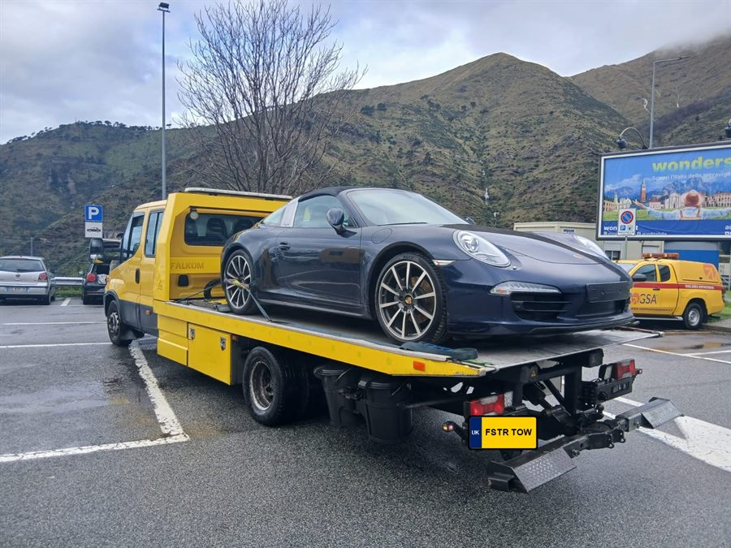

Breakdown Recovery
Recovery when a mechanical or electrical fault leaves your vehicle undriveable, wherever you've stopped.
Broken down, been in a collision, or just need a vehicle moved? Tell us what's happened and we'll work out what's needed — recovery, roadside repair, or transport.
Phone answered 24/7 · Recovery across the UK · Price agreed before we set off
From a simple roadside fix to full recovery and transport, we cover the situations drivers actually run into. Available across England, Scotland, Wales and Northern Ireland.
Recovery when a mechanical or electrical fault leaves your vehicle undriveable, wherever you've stopped.
Collection of scrap and non-runner cars in any condition.
Car won't start, won't move, or isn't safe to drive? We recover cars of all makes and sizes.
Wider vehicle recovery for cars, vans, 4x4s and light commercial vehicles.
Breakdowns don't keep office hours. Our recovery service operates around the clock, every day of the year.
Flat battery, flat tyre or locked out? Many roadside issues can be resolved on the spot without a tow.
Recovery for vans and light commercial vehicles, keeping trade and business disruption to a minimum.
Careful, considerate recovery following a road traffic collision.
Non-breakdown vehicle transport for purchases, auctions, storage moves or transporting a non-runner.
Clear, straightforward steps from your call to your vehicle being safely recovered.
Phone us and describe what's happened. We'll ask a few quick questions about your vehicle and location.
Tell us your exact location, vehicle type and the nature of the problem so we can send the right equipment.
A recovery vehicle is sent out to your location as soon as possible based on availability and conditions.
Your vehicle is loaded or towed safely and taken to your chosen destination — home, garage or elsewhere.
Whatever's happened, your safety comes before the vehicle. A few basics make a real difference while you wait.
Put your hazard lights on straight away, and a warning triangle behind the vehicle if you have one and it's safe to place it.
If you're on a fast road or dual carriageway, get yourself and any passengers behind the barrier if it's safe to do so.
Stay somewhere visible to passing traffic but well clear of live lanes — don't attempt roadside repairs in a moving-traffic lane.
Call us with your exact location — a postcode, junction number or nearby landmark all help us reach you faster.
Faster Breakdown Recovery is a mobile operation with no fixed depot. When you call, we send a local recovery operator straight to where your vehicle is, whether that's a city street, a motorway hard shoulder or a driveway in a small town. That's how we can cover England, Scotland, Wales and Northern Ireland, day and night.
Our city and motorway pages have real local information, not a repeated template: the roads, junctions, low emission zones and awkward spots you're likely to run into, and what to do if you break down there.
View all areas coveredReal recovery vehicles and equipment — no stock fleet photos. Our recovery capability is built around practical vehicle transport and recovery work.


Recovery carried out with the right equipment and technique for your vehicle, not a one-size-fits-all tow.
We aim to reach you as quickly as conditions allow, keeping you updated from the moment you call.
Clear information about timing and cost before we get to work — no vague promises or hidden surprises.
Suitable vehicles and equipment for cars, vans and light commercial vehicles.
Roadside assistance covers problems that can often be fixed on the spot, such as a flat battery or a puncture. Breakdown recovery is used when the vehicle can't be safely made driveable at the roadside and needs to be towed or transported elsewhere. We offer both, and can advise which applies once we know what's happened.
Yes. Alongside standard car recovery, we handle vans and light commercial vehicles — see our van recovery page for more detail. Let us know your vehicle type when you call so we can send the right equipment.
Yes, we provide accident recovery. If anyone is injured, always call 999 first. Once the scene is safe and, where relevant, the police or other emergency services have attended, we can recover your vehicle to a garage, storage or another location of your choice.
Yes. See our motorway pages for road-specific advice, including the M1, M6 and M25. If you break down on a fast, busy road, stay inside your vehicle only if it's unsafe to get out — otherwise get behind the barrier if there is one, keep hazard lights on, and call us once you and any passengers are somewhere safe.
Cost depends on your location, vehicle type and the nature of the job. We'll talk this through with you on the phone or via our quote form before any work begins, so you know what to expect.
Yes, we operate 24 hours a day, every day of the year, including nights, weekends and public holidays. See our 24 hour breakdown recovery page for more information.
If you can, move the vehicle somewhere safe and switch on your hazard lights. Stay somewhere visible but out of the path of traffic — behind a barrier on a fast road, or well onto the verge on a quieter one. Keep your phone charged where possible so we can reach you.
Call now for fast, professional breakdown recovery — or message us on WhatsApp and we'll come back to you with a quote.